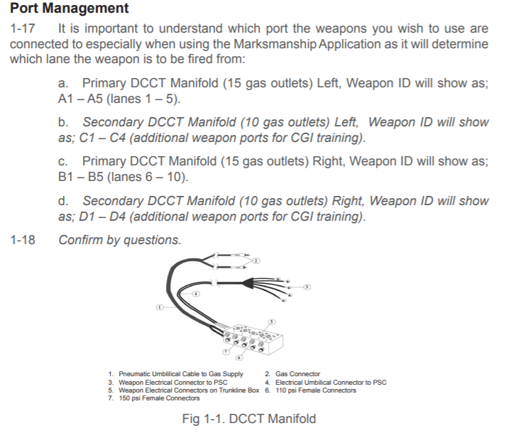
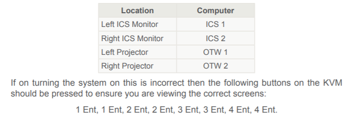
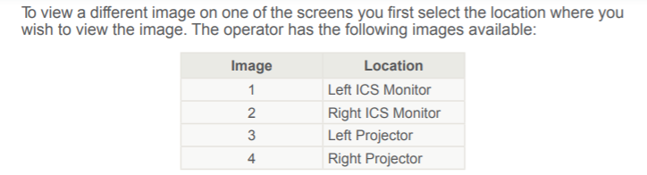
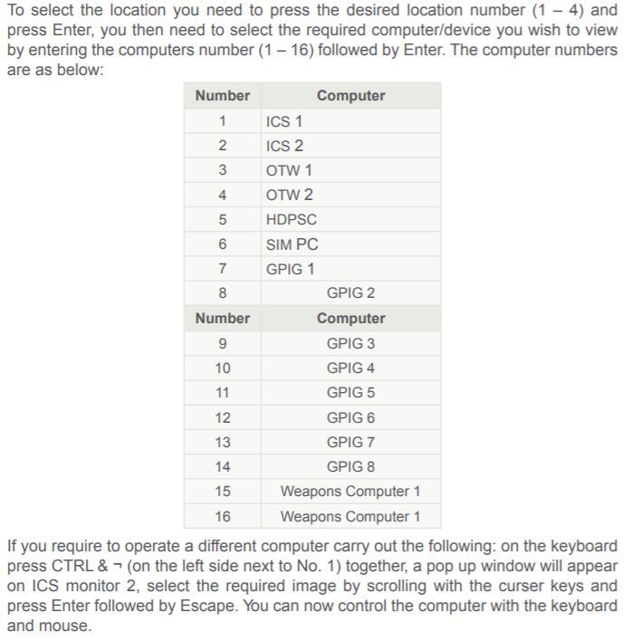

DCCT
BASIC USER
- Not allowed to sign onto range using a 906A… Must be SA (B) 90 or 18
ADVANCED USER
- RCO can operate
- Must be current and competent on weapon system that they are using
DCCT MANAGER
- Maintains system
- issues equipment
- deals with system faults
OTHER INITIAL STUFF
<>
Range recce to be done
Read Standing Orders
Assist systems manager
Liaise with systems manager
RSD is minimum required for use
Consider CO2 effects
DCCT enables the following
Stages 1-4
- Grouping and Zeroing
- Elementary and Advanced application of fire
- ACMT
- TLFTT
DCCT can also
- Recall shots fired during practice
- Basic FCO training
- Use of support weapons and MFC trg
- Authored lanes can be stored on Hard Drive (Advanced only)
- Enables run time of authoring pre-installed CGI
- IDF, mortar and Artillery trg
- CQM is not supported
GAS / AIR REGULATORS
Gas / Air supply. DCCT weapons use compressed gas to simulate recoil. NOt meant to match real recoil, only intended to disturb the position
Regulators. These are pre set by MEGGITT and are controlled by system managers. Users are to ensure that correct pressures for the weapon in use are displayed on the gauge
Only issued cylinders to be used, Need to be stood upright and may be chained to prevent topple. Only system manager can change canisters
- Rifle (tethered) LSW, LMG, GPMG, 66mm, ASM, NLAW, HMG = 110 PSI
- GMG = 125 PSI
- Glock 17, C8 carbine and SA80 converted = 1600 - 3000 PSI - nitrogen
- SA80 converted (with the mag that we were using) = 150 PSI
SYSTEM COMPONENTS
- Regulator - adjusts the amount of pressure delivered to each weapon
- Valve - just a handle
- Gauge
- Weapons trunk line connector (manifold) - The weapons trunk line provides the link between the DCCT weapons and PSCs.The manifold provides the junction point for cables and hoses from and to both weapons and PSCs
Picture of a manifold

OTHER COMPONENTS
- Simulation unit - High Definition Hit Detection Camera - The hit
detection camera is contained in a removable housing on top of the LCD projector. The
hit detection camera is used to record the laser beam fired onto the viewing screen.
There are no controls or adjustments that need to be carried out by the Operator.
- Speakers - Each system has 4
- Lookback camera - The look back camera is used to record the firer ’s actions and verbal
commands during training. The camera can be attached to the side of the viewing
screen or onto a wall or ceiling.
- Main viewing screens
- Firing platforms - provided to ensure that firers are the correct
height in relation to the screens when firing from all positions. They are designed to
allow firers to adopt all required firing positions and should be long enough to enable
firers to fire a bipod supported weapon from the prone position.
WEAPONS
All are in-service weapons that use EYE SAFE LASERS, nitrogen gas charged, rechargeable batteries
BLUEFIRE
- Modern bluetooth - check serial numbers
- Full freedom of movement
- Come with a paired dongle
- Bluefire magazines and charger
- operating range of 10 meters from dongle
- connect prior to turning system on
- connects to MANIFOLD
- LED indicators facing inwards
- LED RED upon start = not paired / turns GREEN when OK
- Will only pair when charger / magazine is removed
- If using more than one, need to be at least 60 cm APART
NITROGEN MAGAZINES
<>
3000 psi maximum
1600 psi minimum to make it work correct
OPERATORS CONTROL STATION
Operator controls...
- Firers actions
- Enter instructions (jam, malfunction, etc
- Keyboard and Mouse
- DCCT Telephone
- CGI Joysticks x 3
- EQUIPMENT RACK 1
- Dual and single screen are identical
- Audio amplifiers - On/Off switch indicator
- volume control
- D-Link (thats the Ethernet switch that takes up to 90 seconds to be ready)
- Rack Light
- 16 X 4 VIDEO KEYBOARD MOUSE (KVM) SWITCH



INSTRUCTOR CONTROL STATION - ICS
- Racks 2 and 3 = protected by lockable metal cover
- to open - turn catch (absolute rocket science)
HIT DETECTION PRIMARY SIMULATION COMPUTER - HDPSC - BASIC
- Weapons server
- Takes it information from the HIT DETECTION CAMERA
- supports up to 20 weapons
- Start by pressing SLEEP button
- Started before the ICS
- Contains, POWER, SLEEP, RESET, WEAPON TRUNK LINE SOCKETS, USB PORTS
OCR - ADVANCED
Very similar to HSPSC but...
- No On/Off power switch - used the mains
- Software button
- power resent button
- power indicators
- camera ports
RACK 2 (left) AND 3 (right)
- Identical
- House additional computers
- RACK 2 has a SIM PC, OTW 1, Gen-purpose image generator (GPIG1, 2, 3 and 4(used for optics))
- RACK 3 - OTW 2, GPIG 5, 6, 7 and 8
ul>
OTHER ANCILLARIES
- Device cables are used for the optics - VGA cable in a mesh sleeve
- GPIG joytsicks
- DCCT fist Thermal Sight - needs to be adssigned and connected to weapon - 4 issued for a screen on DCCT (e)
- DCCT Commanders trget locator - CTL - Image VIA GPIG and used on collective trg scenario - 2 per screen
Ok you mongs, that's all I took from the lesson. The rest should be in the handout that we got.
HAPPY TEST CHEATING